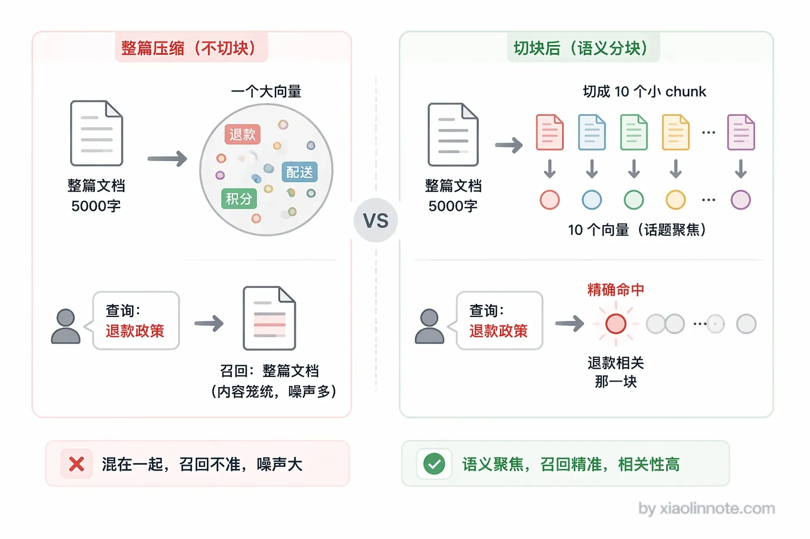
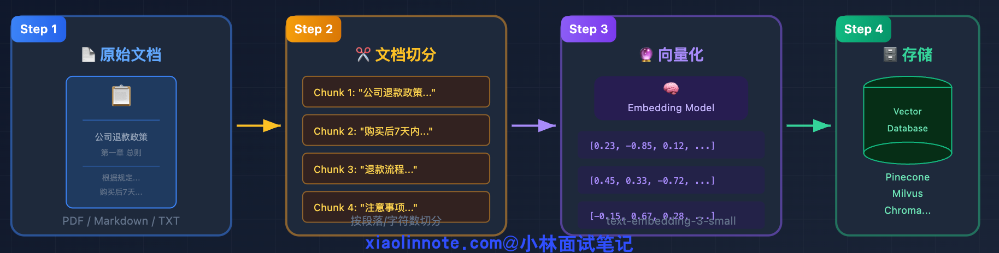
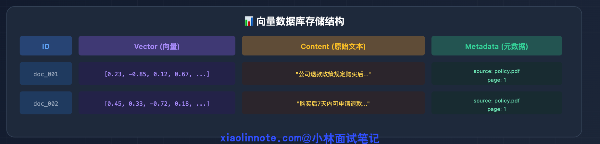
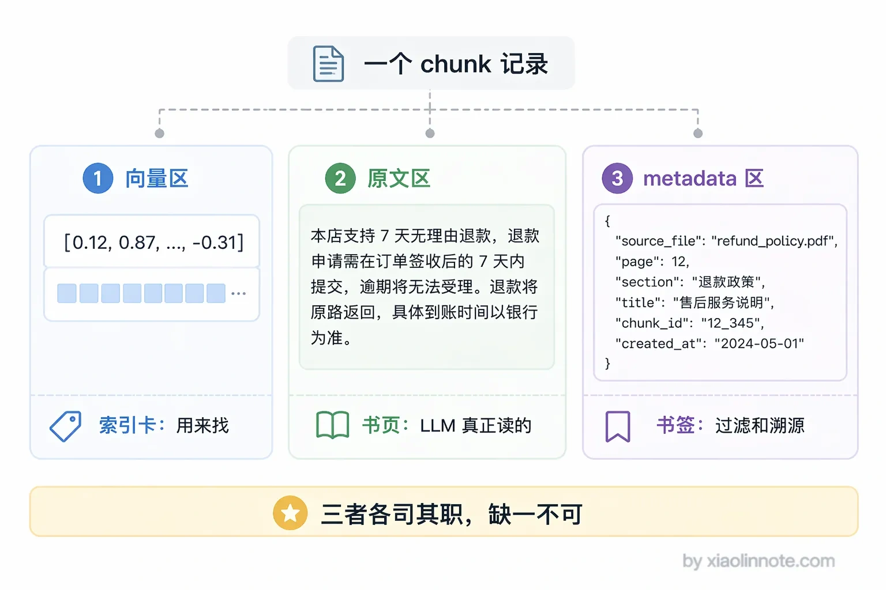
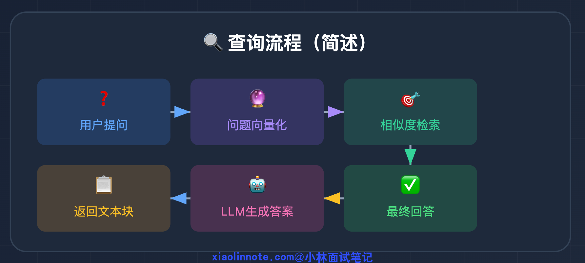
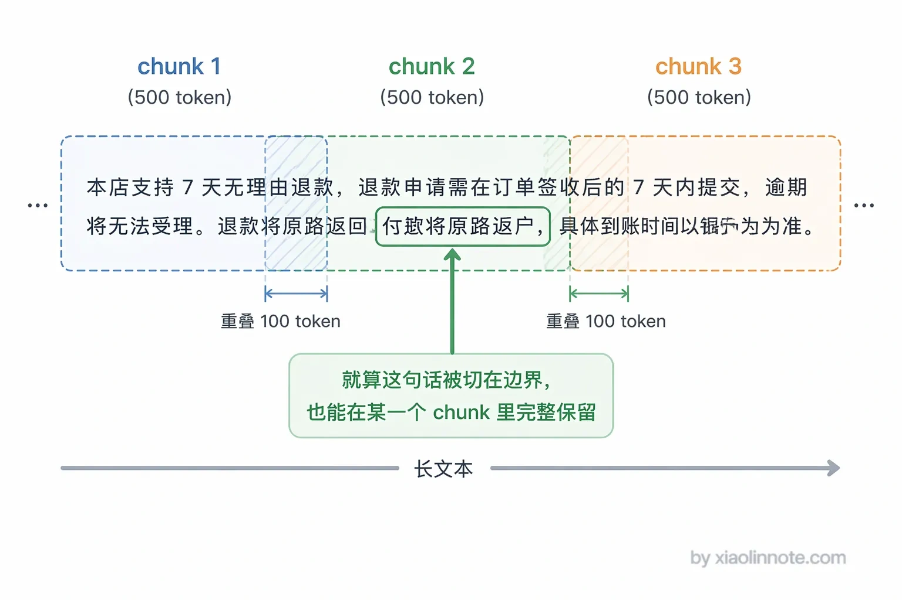
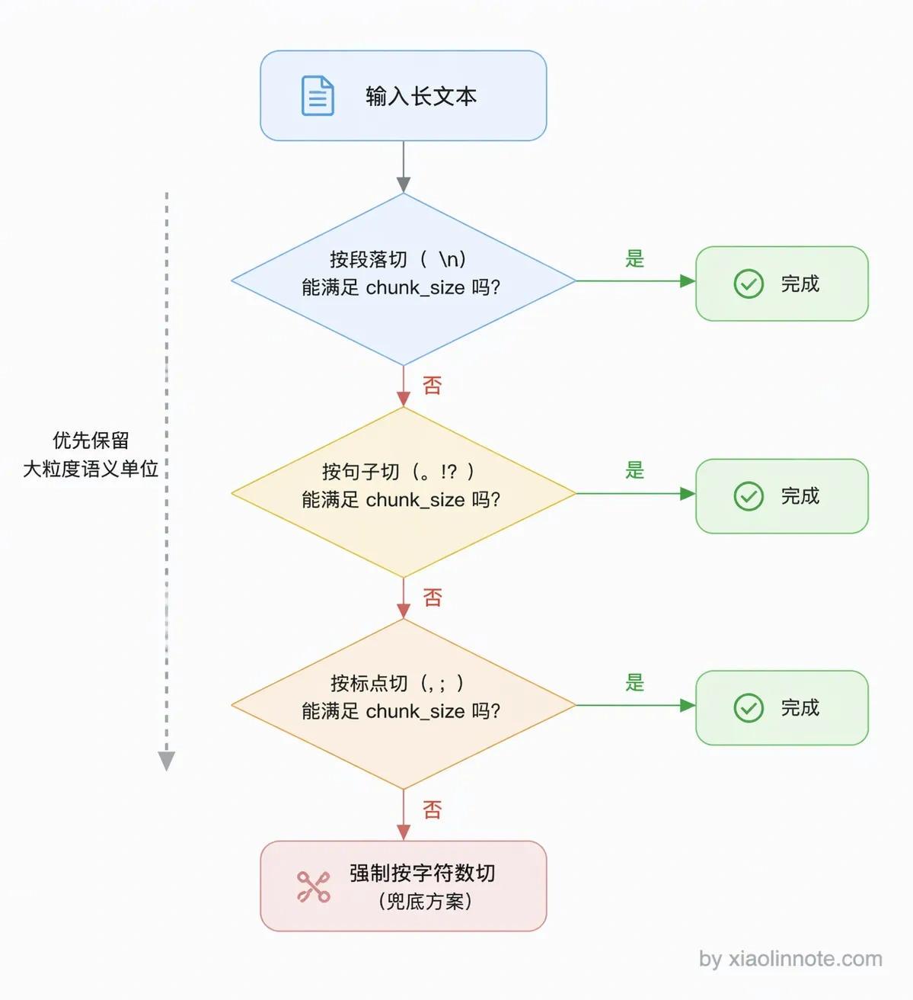
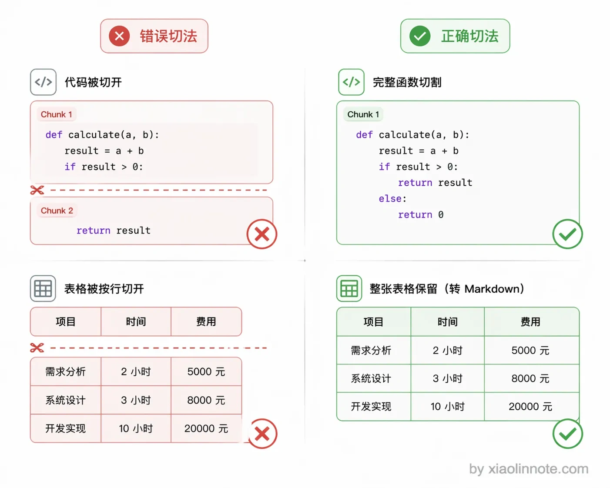
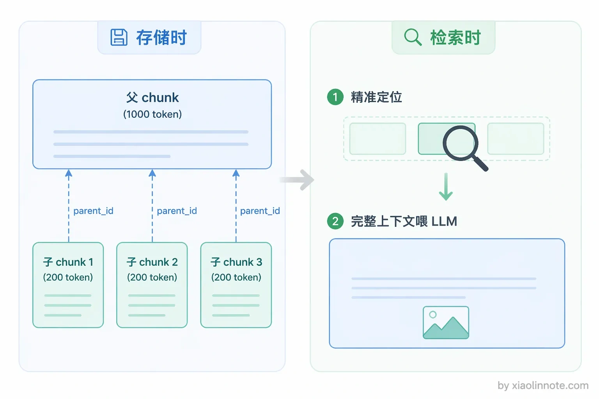
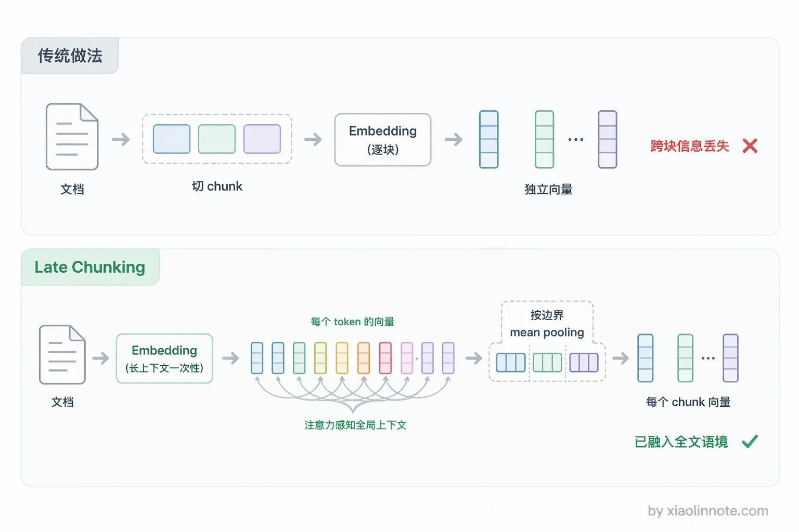

本篇目录
4. RAG 中的文档是怎么存的？粒度是多大？详细说说文档切割（Chunking）策略？
👔面试官：RAG 里的文档是怎么存进向量库的？你说说 Chunking 怎么做。
🙋♂️我：文档直接整篇存进去就好了吧？反正向量模型什么都能处理。
👔面试官：整篇存？一篇 5000 字的文档压缩成一个向量，细节信息全被「平均掉」了，你检索的时候怎么精准定位到具体那段话？而且 Embedding 模型有输入长度限制，长文档根本塞不进去。
🙋♂️我：那就切成小块呗，每块 50 个 token，切得越小检索越精准。
👔面试官：50 个 token？一个句子都还没说完呢，语义都不完整，LLM 拿到这种碎片能看懂什么？还有代码文件、表格这些特殊内容，你按固定大小切试试？
🙋♂️我：呃……那就切成 500 token，用固定大小加重叠就行了吧？
👔面试官：固定大小加重叠只是最基础的策略。语义边界切割呢？父子切割呢？代码按函数切呢？你一个都说不出来，只会一种最简单的方案，面试怎么过的？
好吧，被问住了。Chunking 这块看起来简单，但里面的学问不少，下面我来详细讲。
💡 简要回答
文档不能直接存进向量库，必须先切成小块也就是 chunk，每个 chunk 分别向量化之后存成一条记录。
每条记录我理解有三个核心部分：向量用于相似度检索，原始文本是检索命中之后塞给 LLM 读的内容，metadata 是来源文件、页码这些附加信息，用于过滤和溯源。这两个东西缺一不可，向量负责找到，原文负责阅读。
切割粒度没有固定答案，通常 500 到 1000 个 token 是一个合理的起点，但更重要的是根据文档类型来选策略，普通文本用固定大小加重叠，有标题结构的文档按语义边界切，代码按函数切，如果既要检索精度又要上下文完整的话，我会用父子切割，也就是小块检索、大块返回。
📝 详细解析
文档是怎么存的？
先说一个最重要的前提：原始文档不能直接存进向量库，必须先切成小块（chunk）再存。
你可能会问，为什么不能整篇存？原因有两个。
第一，向量模型有输入长度限制，一般最多几百到几千 token，一篇几千字的文档根本塞不进去。
第二，就算模型支持超长输入，把整篇文章压缩成一个向量，细节信息会被「平均掉」，你想找「退款政策」，但向量里还混着「配送时效」「积分规则」等内容，最终检索到的就是这篇笼统的文档，而不是精确的那段话。
很多人以为向量模型无所不能，其实它和人类阅读一样，信息太密集就抓不住重点。

所以文档入库的完整流程是这样的：

一篇文档会变成向量库里的多条记录，这是 RAG 存储的核心特点。一篇 5000 字的文档，切成 500 字一个 chunk，就是 10 条记录；100 篇文档就是 1000 条记录。
每条 chunk 记录的结构
那每条记录里到底存了些什么？向量库里每一条记录通常包含三个部分，缺一不可：

可以用一个直觉类比来理解这三者的关系：向量是索引卡，原文是书页，metadata 是书签。索引卡（向量）告诉你这段内容在语义空间里的位置，用于快速找到相关内容；书页（原文）才是 LLM 真正要阅读的内容，检索命中后原封不动地塞进 prompt；书签（metadata）记的是来源文件名、页码、章节这些附加信息，用于过滤（「只搜客服部门的文档」）和溯源（「这个答案来自哪个文件的第几页」）。

向量和原文为什么要同时存？你可能会想，向量不就够了吗？其实不是，因为它们承担的角色完全不同。向量是一串浮点数，LLM 看不懂，只有检索系统才会用到它；原文是纯文字，没有向量就没法做相似度检索。向量负责「找到」，原文负责「阅读」，两者缺一不可。
理解了存储结构，查询时的流程就很顺了：

用户问题 -> 向量化 -> 在向量库里找相似的 chunk -> 取出 chunk 的原文 -> 塞进 prompt -> LLM 生成答案。向量只在「找」的时候用，LLM 最终读的是原文。
粒度怎么定?
既然要切，切成多大合适？粒度选择本质上是在两个方向上做取舍。chunk 太大，向量把太多语义压缩在一起，变得笼统，检索时容易召回和问题只有部分相关的内容，同时也更容易超出 Embedding 模型的输入长度限制。chunk 太小，单个 chunk 语义不完整，上下文丢失，LLM 拿到这段内容也看不懂，而且检索噪音更多。
通常 500～1000 token 是合理的起点，但更重要的是结合文档的内容结构来决定。那具体怎么结合呢？下面分策略详细讲。
文档切割策略有哪些？
策略一：固定大小切割（Fixed Size Chunking）
最简单的方式，按固定字符数或 token 数切割，不管语义边界在哪。优点是实现简单、chunk 大小可控；缺点是可能在句子中间截断，破坏语义完整性。
纯固定大小几乎不单独使用，通常会加上**重叠（overlap）**来缓解边界截断问题。你可能觉得这种方式太粗暴了，确实如此。重叠就像扫描仪扫跨页内容时特意扫两遍边缘区域，前一个 chunk 的末尾和下一个 chunk 的开头有一段重叠内容，确保跨边界的语义能被至少一个 chunk 完整覆盖。
比如 chunk_size=500、overlap=100，后一个 chunk 的前 100 个字符和前一个 chunk 的后 100 个字符是相同的，即使边界切在了一句话中间，这句话也一定完整地出现在某一个 chunk 里。

这种策略适合纯文本、没有明显结构的文档，是最简单也是最保底的选择。但保底毕竟只是保底，如果你希望切割质量更高，就需要理解下面这种策略。
策略二：语义边界切割（Semantic/Structure Based Chunking）
固定大小切割最大的问题就是可能切断语义，那为什么不顺着文本的天然断点来切呢？这就是语义边界切割的思路：按文档的自然语义边界来切，比如段落、句子、标题层级。核心思想是：不要在语义中间截断，找到文字天然的「断点」再切。
为什么语义边界更好？因为一个句子是语言表达意思的最小完整单位，在句子中间截断就像切断一段话的呼吸，前半句和后半句单独拿出来都看不懂。按段落切则更进一步，每个 chunk 都是围绕同一个话题展开的完整段落，语义独立性最好。
实际操作时，常见的做法是维护一个分隔符优先级列表，先尝试按段落切，切出来太大再按句子切，还是太大再按标点切，以此类推，直到满足 chunk_size 限制。

对于有明确标题结构的 Markdown 或 HTML 文档，按标题层级切是更优的选择：每个 chunk 对应整篇文档中的一个完整章节，metadata 里自动带上所属标题（比如「产品手册 > 退款政策 > 申请流程」），既语义独立，又方便过滤和溯源。
策略三：特殊内容专项处理
前面两种策略对普通文本够用了，但遇到代码文件和表格就会露馅，通用切割策略在这两种内容上效果很差，需要单独处理。
代码应该以函数或类为单位切割，原因很简单：一个函数是最小的语义完整单元，从函数中间截断就失去了逻辑意义。试想把一段函数的参数定义和返回值分到两个 chunk，单独看哪个 chunk 都不知道这段代码在做什么。用语法解析工具（比如 Python 的 AST 模块）可以识别函数和类的边界，保证每个 chunk 都是完整可理解的代码逻辑单元。
表格则要整块保留，转成 Markdown 格式存储，不能按行截断。表格的每一行都依赖表头才有意义，「2 小时」单独来看完全不知道是什么的 2 小时，但配上列名「响应时间：2 小时」就清晰多了。把整张表格作为一个完整 chunk，才能保留列的含义和行间的对比关系。

策略四：父子切割（Parent-Child Chunking）
理解了前面几种策略各自的局限——固定大小可能切断语义，语义边界切割质量好但粒度不好控制，你自然会问：有没有一种策略能同时兼顾检索精度和上下文完整？父子切割就是在回答这个问题。这是在实际工程里效果提升最显著的策略之一，核心思路可以用一句话概括：检索时用放大镜（小块，精准定位），返回时用全景图（大块，上下文完整）。
存储时，同一段内容存两份。一份是细粒度的小 chunk（比如 200 token），专门用于向量检索，因为小 chunk 语义聚焦，围绕一个小话题，检索精度高。另一份是包含这个小 chunk 前后上下文的大 chunk（比如 1000 token），通过 ID 与对应的小 chunk 关联。检索时用小 chunk 找到精准的命中点，然后根据关联 ID 取出对应的大 chunk，把完整的上下文交给 LLM 阅读，生成质量更好。
好比图书馆找书：你用目录卡（小 chunk）快速定位到某章某节，但拿出来读的是完整的那一章（大 chunk），不是只读目录卡上的那句简介。

这种策略的代价是存储量翻倍，索引构建也更复杂，但在对召回质量要求较高的场景下，这个成本是值得的。
另外值得一提的是一个比较新的思路叫 Late Chunking（Jina AI 2024 年提出），它换了一个角度来解决切割丢失上下文的问题。
传统做法是先切块再编码，每个 chunk 独立过一遍 Embedding 模型，跨块的上下文信息在编码阶段就丢了。Late Chunking 反过来，先把整篇文档丢给一个支持长上下文的 Embedding 模型，让模型做一次完整的前向传播，输出文档里每个 token 的向量（这些 token 向量之间已经通过注意力机制彼此感知过了）；然后按照 chunk 的边界，把落在同一个 chunk 里的所有 token 向量做 mean pooling，得到这个 chunk 最终的向量。
关键在于「延迟」二字：先编码后切分，不是先切分后编码。这样每个 chunk 的向量里已经天然融入了全文的语境（因为每个 token 在注意力计算时都能看到全文），跨块的代词、背景、对比关系都能保留。代价是对 Embedding 模型要求高，必须支持足够长的上下文窗口（比如 Jina 自家的 jina-embeddings-v2 支持 8192 token），而且计算时要保留 token 级中间结果，比传统方式开销大一些。

把几种策略的适用场景梳理成表，实际选型时可以对照来看：
| 策略 | 适用文档类型 | 优点 | 缺点 |
|---|---|---|---|
| 固定大小 + 重叠 | 纯文本、无明显结构 | 实现简单、chunk 大小可控 | 可能在语义中间截断 |
| 语义边界切割 | 段落分明的文章 | 语义完整，召回质量好 | 实现稍复杂，chunk 大小不均 |
| 标题层级切割 | Markdown、HTML 文档 | 天然语义独立，带结构 metadata | 依赖文档有清晰的标题结构 |
| 代码按函数切割 | 代码文件 | 保留代码逻辑完整性 | 需要 AST 解析，限定语言 |
| 父子切割 | 各类文档（追求高质量） | 检索精准 + 上下文完整两全 | 存储量翻倍，索引构建复杂 |
| Late Chunking | 各类文档 | chunk 向量保留全文上下文 | 需要模型支持长输入 |
🎯 面试总结
回到开头那段面试，Chunking 这个问题考察的是你对 RAG 存储层的理解深度。
回答这个问题，先说清楚为什么文档不能直接存：一是向量模型有输入长度限制，二是整篇文档压缩成一个向量会丢失细节。然后说清楚怎么切：固定大小加重叠是最基础的，语义边界切割更智能，代码和表格要特殊处理，父子切割可以兼顾检索精度和上下文完整。
粒度选择没有银弹，500～1000 token 是起点，关键是根据文档类型选策略。如果面试官追问「你实际用的什么策略」，你就说「固定大小加重叠做兜底，对结构化文档用语义边界切割，对高质量要求的场景用父子切割」，这个回答就很扎实了。
对了，大模型面试题会在「公众号@小林面试笔记题」持续更新，林友们赶紧关注起来，别错过最新干货哦！